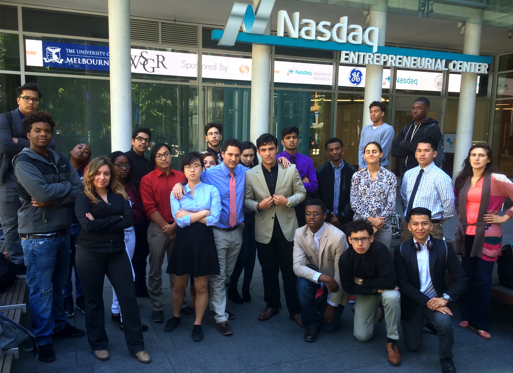
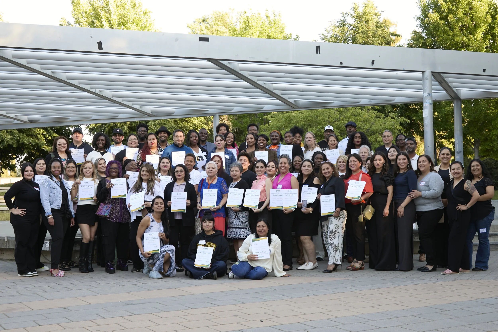
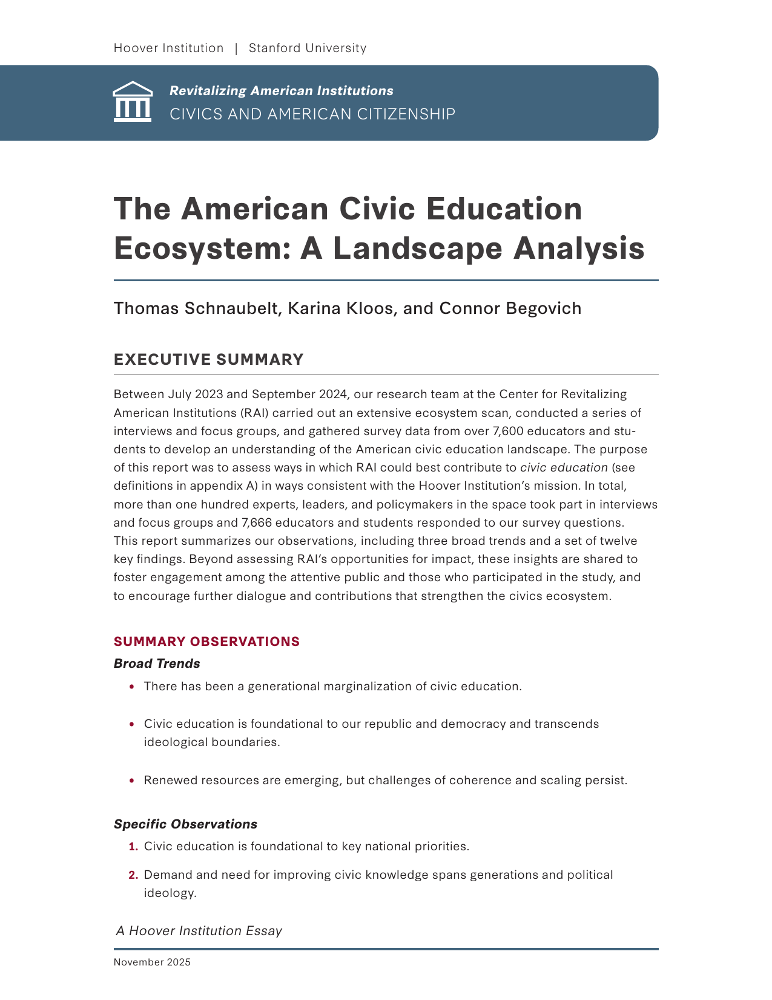
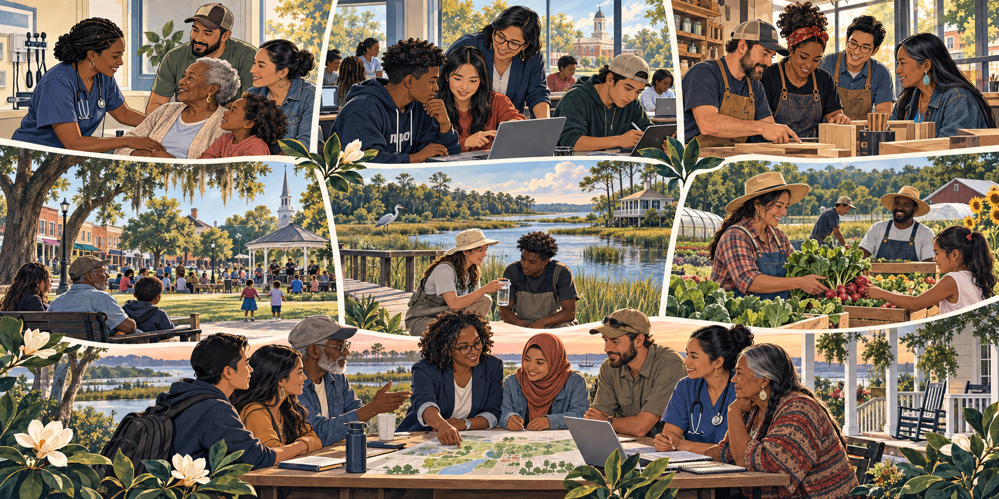
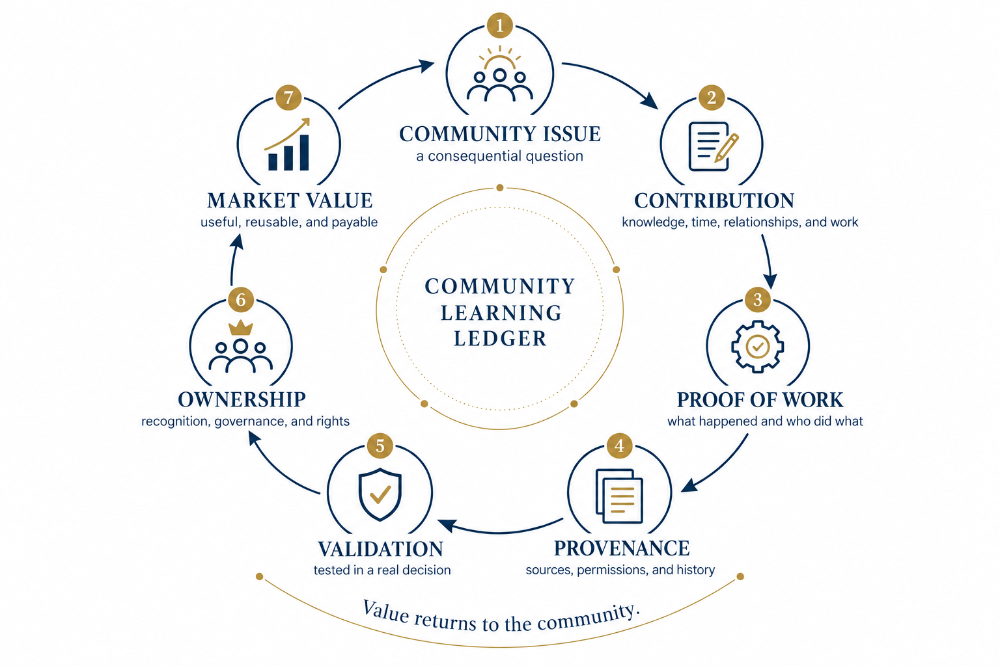

01 · Make it authentic
Begin with a question that belongs to a place.
Students investigate an issue that affects people they can listen to and an institution or community partner that can respond to what they learn.
Civic Labs / Community Schools
Community Schools already connect young people with educators, families, community organizations, and neighborhood resources. A Civic Lab uses this common platform to turn those relationships into rigorous learning, useful public work, and stronger community capacity.
Civic Labs in action
We can share curriculum that has already been made. The harder work is helping educators use it well: creating the structures, time, relationships, and professional learning that allow students to turn a real community question into rigorous, interdisciplinary, public work—without asking every school community to reinvent the wheel. A Civic Lab connects courses, Community School relationships, university resources, out-of-school learning, and local partners around that work.
01 · Make it authentic
Students investigate an issue that affects people they can listen to and an institution or community partner that can respond to what they learn.
02 · Work across disciplines
A common question can connect history, science, mathematics, English, civics, economics, career and technical education, data, and public presentation.
03 · Support the educator
Teachers need planning tools, protocols, examples, coaching, time to collaborate, and a community of practice where they can learn from one another.
04 · Use the whole learning day
After-school programs, summer learning, internships, university partnerships, community organizations, and public demonstrations can extend the inquiry without fragmenting it.
05 · Make rigor visible
Students can demonstrate disciplinary knowledge, research, reasoning, collaboration, communication, and civic judgment through work that counts toward meaningful academic and graduation pathways.
06 · Learn across schools
Schools can adapt a common learning arc, compare evidence, preserve what works, and contribute to a growing body of practice while keeping authority in the local community.
The work behind the work
Before Civic Labs had a name, we were building the connective tissue that helps people learn, contribute, and move resources through institutions that already exist. We are looking for the next place where that practice can serve public education.
Civic Labs is carried by educators, learning designers, and ecosystem builders whose work connects public institutions to community life.

Public education · economic democracy
Alfredo is an educator, entrepreneur, and systems builder with more than twenty-five years across public education, civic learning, entrepreneurial ecosystem building, community development, and institutional design.
He was a founding teacher at Mott Haven Village Prep in the South Bronx, taught at Blair International Baccalaureate High School and Leadership Public Schools in East Oakland, and served as Bay Area Director of NFTE. As a co-founder of ESO Ventures, he helped build a statewide entrepreneurial support organization and now leads SPCC.1’s work connecting public education, economic democracy, and shared prosperity.

Civic learning · youth leadership
Amy is an entrepreneur, strategist, and educator with more than twenty years of experience working across educational institutions, nonprofits, government agencies, and businesses with social-justice missions.
Through Citizen Schools in Boston and California, she built youth programs and connected young people to adults and institutions beyond school. At the Coro Center for Civic Leadership, she directed youth programs across twelve Bay Area public high schools. At the University of Chicago, she served as Director of the University Community Service Center and Associate Dean of Students, leading thirteen programs, more than 250 community partnerships, and a staff team of 23.

Deeper learning · project-based practice
Al is an educator, learning designer, strategist, and field-builder whose work has helped shape the small-schools, Deeper Learning, project-based learning, and high-school redesign movements.
At High Tech High, he worked as a math and physics teacher, facilitator, and Digital Commons lead. At the Buck Institute for Education, now PBLWorks, he helped develop PBL 101 and expand PBL World. At XQ Institute, part of the Emerson Collective, he created professional learning for schools and partners across the country and helped develop a national partnership with the Carnegie Foundation for the Advancement of Teaching.

Young people · schools · real-world work
At NFTE, Alfredo built relationships with schools and Silicon Valley companies and brought them together through business-plan competitions, design challenges, and experiences that gave young people something real to work on. That braid brought young people, teachers, principals, and superintendents from multiple school districts into sustained relationships with global companies, accelerators, entrepreneurs, philanthropic partners, chambers of commerce, and municipalities—creating bridges between local schools and the innovation economy.
Making the Bay Area a classroom. When I became the Bay Area director for NFTE—the Network for Teaching Entrepreneurship—I was coming out of public education. I had taught in New York and Oakland, and I cared deeply about the young people I served. But I also saw how easily schools could become isolated from the communities, industries, and opportunities surrounding them.
At NFTE, I began building relationships across the region. I connected high schools and school districts in East San Jose, Oakland, Hayward, Richmond, and San Francisco with companies including Cisco, PayPal, Salesforce, EY, and SAP. Some days I spent hours driving from one school district to another and then across Silicon Valley to meet with a corporate partner. My classroom became the entire Bay Area.
The work was practical. We organized business-plan competitions, design challenges, entrepreneurship programs, company visits, and public presentations. Students were not simply reading about entrepreneurship. They were developing ideas, studying real businesses, presenting to adults, receiving feedback, and learning how institutions and economies actually worked.
Often, the first challenge was access. In California, it was difficult for schools to get students out into the region. So I asked companies to help. Cisco and PayPal paid for buses. That simple act transformed the relationship between a school and a company. A company was no longer just a distant brand, and a school was no longer asking for charity. Together, they were creating an experience students could not have built alone.
We worked with thousands of young people, many of whom were developing small businesses, community businesses, and ideas rooted in their neighborhoods. The experience taught me that young people do not need to be separated from the economic world in order to be protected from it. They need guided access, meaningful questions, real audiences, and adults who can help them see possibilities.
The deeper accomplishment was relational. NFTE created a bridge among educators, school leaders, students, companies, and communities. It made social capital visible and useful. It showed that curriculum becomes more powerful when it is connected to people, places, institutions, and consequences.
The lesson I carried forward was that education is not only what happens inside a classroom. Learning grows when schools can draw on the knowledge and resources of the surrounding community. The work of an intermediary is to help those relationships form, to make participation possible, and to turn scattered opportunities into a coherent learning experience.
NFTE was an early expression of the practice I now call Civic Labs: start with young people, connect them to the world around them, and build the relationships that allow learning to become real.

Adults · entrepreneurs · community infrastructure
At ESO Ventures, Alfredo helped build a system around adult entrepreneurs, braiding public, private, and philanthropic resources from community colleges, municipal and state government, peer learning communities, curriculum, coaching, and affordable capital to formalize businesses and help entrepreneurs move from sole proprietorships to employer enterprises.
Building an on-ramp to ownership. ESO Ventures began in Oakland in 2020 through a partnership involving the City of Oakland, Merritt College, the Bay Area Community College Consortium, and community-based leaders. The initial question was simple and urgent: how could existing public institutions and community relationships help Black and Brown entrepreneurs build businesses and gain access to capital?
I joined Ben Wanzo and Martha Hernandez to turn that question into an operating system. We launched a virtual business incubator and organized the work around the idea “Build Where You Are.” The goal was not to import a Silicon Valley model into East Oakland. It was to build from the people, institutions, knowledge, and aspirations already present in the community.
Community colleges became part of the backbone. They offered trusted locations, educational infrastructure, faculty relationships, and access to people who were often overlooked by conventional entrepreneurship programs. ESO added the connective tissue: recruitment, cohorts, curriculum, coaching, business planning, technical assistance, relationships with service providers, and pathways to capital.
The curriculum was important, but it was never the whole intervention. Entrepreneurs participated in weekly group sessions and individual coaching. They developed goals, clarified their business identity, studied their markets, created strategic plans, worked through financial planning, and prepared to present their businesses publicly. The program connected confidence to competence, and competence to capital.
The work also required braiding different forms of social and financial capital. Public institutions supplied legitimacy and reach. Community colleges supplied infrastructure. Philanthropy helped fund design and operations. Political leaders helped create a public pathway. Entrepreneurs supplied knowledge, proof, and moral authority. Coaches, advisors, lenders, and service providers added specialized resources.
That braid helped produce the California Entrepreneurship and Community Act and approximately $18 million in state capital for community entrepreneurs. ESO and its partners went on to serve hundreds of entrepreneurs—eventually more than 600—and deploy millions of dollars to businesses. Many participants received institutional capital for the first time.
The accomplishment was not simply the creation of a fund or an incubator. It was the construction of a pathway. People could enter through a community relationship, move through learning and coaching, connect with peers and institutions, and become eligible for resources that had previously been out of reach.
ESO taught me that people do not need isolated programs. They need structures that connect learning, relationships, support, and resources over time. It also taught me that financial capital works differently when it arrives through trusted social infrastructure.
That is the lesson I want to bring back into public education: curriculum, relationships, institutions, and resources should not remain separate. A school community should be able to use what it already has to help young people build knowledge, agency, contribution, and eventually ownership.
Both examples began with what was already there. We braided social capital, unlocked resources, and built capacity around people doing the work. The next step is to bring that practice back into the systems of public education.
A living civic inheritance
Across the country, people have built schools as community institutions, small schools around relationships and local authority, deeper-learning networks around real-world work, universities around public purpose, and civic traditions around shared responsibility. These strands have often developed separately. The opportunity is to bring them into relationship in a real place.
Schools as neighborhood institutions connected to families, public agencies, health, food, housing, and local organizations.
North Carolina · SoutheastSmaller learning communities, teacher judgment, student exhibitions, local voice, and the question of who has authority over public education.
New York City · NortheastInquiry, interdisciplinary projects, internships, performance, and public demonstrations that connect learning to life beyond school.
California · New England · national networksUniversities connecting research, teaching, students, and faculty to community-identified questions and long-term local partnerships.
Penn · Duke · NCCU · ECU · regional centersQuestions of ownership, governance, public investment, shared stewardship, and how communities build assets that last.
Every place has a stakeOne place to show what is possible
North Carolina is not a place waiting for a model to arrive. It is a place with its own history, relationships, institutions, and knowledge about how communities build together.
Real-world project-based learning can become the working practice where these strands meet: a community question, a rigorous classroom, university and community partners, a public audience, and something useful left behind.
The work is to grow what is already here.
The civic ecosystem analysis
In The American Civic Education Ecosystem: A Landscape Analysis, Tom Schnaubelt, Karina Kloos, and Connor Begovich identify three connected capacity gaps:

Growing the shared capacity of public institutions
Community Schools, universities, libraries, public agencies, and community organizations already carry relationships, knowledge, space, and resources. The practical question is whether those assets can be brought together around work a community has a reason to do now.
Every serious engagement begins with a mandate, a budget, and a scope of work. The mandate names the public purpose and the institution or community responsible for acting. The budget makes time, coordination, participation, and follow-through possible. The scope makes the work bounded enough to do well and concrete enough to be useful.
Within that container, a Civic Lab can help the right people investigate a consequential issue, connect learning to public work, and produce something that helps a real community or institution understand what to do next.
The goal is not to add another program. It is to help existing institutions use more of the capacity they already possess—and leave the people involved with stronger relationships, clearer knowledge, and a next step they can carry forward.

Leaving the work stronger
The work should not disappear when the project ends. Students may produce research. Teachers may develop a new practice. Families and community partners may open relationships. Universities may contribute time and expertise. A public institution may have a clearer decision in front of it.
We help name what was learned, who contributed, what was made, and what should happen next. That record can be simple: a public presentation, a research brief, a map, a set of recommendations, a new partnership, or a decision that the community can see and respond to.
The purpose is not to turn relationships into transactions. It is to protect community memory, recognize the work people do, and help the next person or institution build forward rather than begin again.
That is how contribution becomes capacity: the work is used, the relationships remain available, and the next project begins with more knowledge than the last one.

A practical beginning
Every Civic Lab begins with three things: a mandate, a budget, and a scope of work.
If you have those pieces—or are trying to assemble them—we can help make the work concrete, identify the people and resources already available, and determine whether a shared project would add value.
Bring a community, an institution, a question, or the support that makes the work possible.
We can start with what is already present, what is missing, and what might be useful to build together.
Email Alfredo →alfredo@spcc.one